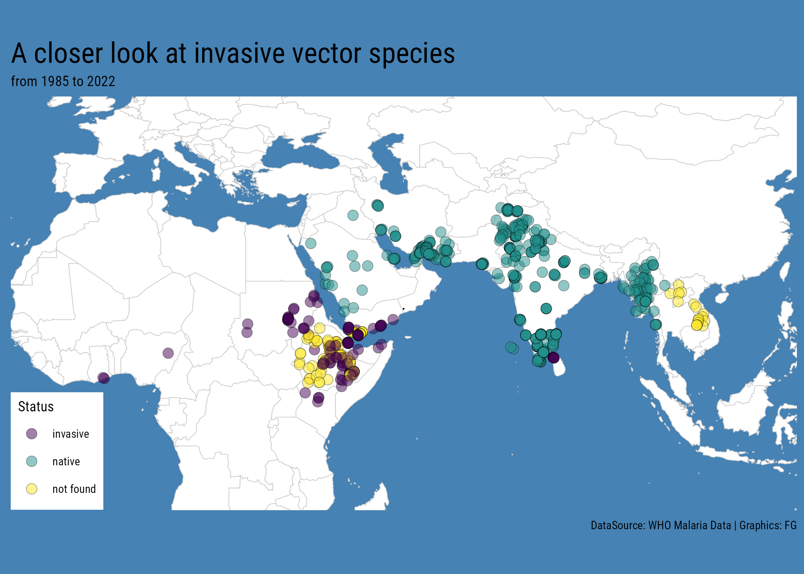

library(tidyverse)
library(readxl)Malaria Data Analysis in R with WHO and World Bank Data
Public health data analysis of malaria in R using WHO malaria map data, World Bank indicators, epidemic context, and visualization.
Overview
This post explores malaria data analysis in R using WHO malaria map data, World Bank indicators, and public health context. It focuses on how data visualization and exploratory analysis can help interpret malaria risk, mosquito information, and locally acquired cases.
August 18, 2023 “A case of locally acquired #malaria has been confirmed in Maryland, Washington, D.C., area. Nine cases have been reported this summer in Florida and Texas, the first in the US in 20 years, according to the US Centers for Disease Control and Prevention. #epidemics” 1

The Malaria case is somehow a concerning case, eradicated all over the World except for some areas in the Africa’s continent, the highlight of cases of domestic origins are considered epidemics.
Let’s dig on some data about Malaria.
WHO Malaria Map
The first source of data is the WHO Malaria Map, a collection of information about location of cases, the vector species, their invasive status, and other variables of interest such as temporal of the study, the sampling methods, and so on.
Load necessary libraries
malaria_who <- read_excel("data/who_data.xlsx",
sheet = "Data")
malaria_who %>% head()dim(malaria_who)malaria_who%>%glimpsemalaria_who <- malaria_who %>%
janitor::clean_names() %>%
mutate(longitude=as.double(longitude),latitude=as.double(latitude))Historical collection of data about mosquito number shows data is collected from 1985 and updated to 2022.
Let’s omit missing values for the year_start variable and create a new variable midyear which is the middle year between the year_start and year_end of each study.
malaria_who_mid_year <- malaria_who %>%
filter(!is.na(year_start),
!is.na(year_end),
!is.na(mosquito_number),
!mosquito_number=="NR") %>%
mutate(mosquito_number=as.numeric(mosquito_number),
year_end=as.double(year_end),
midyear=round((year_end+year_start)/2,0))Along the time, the trend of the number of mosquito varied with ups and downs.
malaria_who_mid_year %>%
group_by(midyear)%>%# count(midyear)
mutate(avg_n_mosquito=mean(mosquito_number))%>%
ungroup()%>%
count(country_name,midyear,avg_n_mosquito,invasive_status)%>%
ggplot(aes(x=midyear,y=log10(avg_n_mosquito),
group=invasive_status,color=invasive_status))+
geom_line(linewidth=2)+
scale_color_viridis_d(labels = c("Invasive", "Native"),
guide = guide_legend(reverse=TRUE,
override.aes = list(size = 10)))+
coord_cartesian(clip = 'off') +
labs(title="Time series Malaria 1985 - 2022",
caption="Graphics: FG",color="Status")+
ggthemes::theme_fivethirtyeight()Mosquito have been categorized as invasive species, after 2016.
malaria_who_mid_year%>%
filter(midyear>= 2010)%>%
ggplot(aes(x=factor(midyear),y=log10(mosquito_number),
group=midyear,fill=invasive_status))+
geom_violin()+
scale_fill_viridis_d(labels = c("Invasive", "Native"),
guide = guide_legend(reverse=TRUE,
override.aes = list(size = 10)))+
ggthemes::theme_fivethirtyeight()+
theme(legend.position = "top")+
labs(title="When moqsquito became tag invasive",
caption="Graphics: FG",fill="Status")The location of cases revealed by consistent sentinel surveillance procedure, identify the area in the south est Africa/Asia to be the most affected by the danger of malaria virus to spread across the rest of the World.
Here is a map of the invasive vector species in this area:
world <- map_data("world")%>%filter(!region=="Antarctica")
malaria_who %>%
ggplot(mapping=aes(x=longitude,y=latitude))+
geom_polygon(data=world,
mapping=aes(x=long,y=lat,group=group),
linewidth=0.2,
color="grey80",
fill="white")+
geom_point(aes(fill=invasive_status),
color="grey80",
shape=21,
stroke=0.2,
size=0.7,alpha=0.5)+
coord_sf(xlim = c(-50, 110), expand = TRUE) +
scale_fill_viridis_d()+
labs(title="Invasive vector species from 1985 to 2022",fill="Status")+
ggthemes::theme_map()+
theme(plot.background = element_rect(color="steelblue",fill="steelblue"))Let’s zoom in to the center of the mass points. Setting the mean range of the latitude and the longitude, to identify the central point, within the mass of points where mosquito were located, and setting a zoom level, a closer focus at the locations is possible, even with a specification of the new range of to be assigned to the map boundaries.2
lon_avg <- mean(range(malaria_who$longitude))
lat_avg <- mean(range(malaria_who$latitude))
lon_avg;lat_avgzoom_to <- c(lon_avg,lat_avg)
zoom_level <- 1.5
lon_span <- 360 / 2^zoom_level
lat_span <- 180 / 2^zoom_levellon_bounds <- c(zoom_to[1] - lon_span / 2, zoom_to[1] + lon_span / 2)
lat_bounds <- c(zoom_to[2] - lat_span / 2, zoom_to[2] + lat_span / 2)library(sf)ggplot()+
geom_polygon(data=world,
mapping=aes(x=long,y=lat,group=group),
linewidth=0.2,
color="grey80",
fill="white")+
geom_point(data= malaria_who,
mapping=aes(x=longitude,y=latitude,
fill=invasive_status),
color="black",
shape=21,
stroke=0.2,
size=3,alpha=0.5)+
geom_sf_text(data = st_sfc(st_point(zoom_to), crs = 4326),
label = '.') +
scale_fill_viridis_d()+
coord_sf(xlim = lon_bounds, ylim = lat_bounds,expand = TRUE) +
labs(title="A closer look at invasive vector species",
subtitle="from 1985 to 2022",
caption="DataSource: WHO Malaria Data | Graphics: FG",
fill="Status")+
ggthemes::theme_map()+
theme(text=element_text(family="Roboto Condensed"),
plot.title = element_text(size = 18),
plot.background = element_rect(color="steelblue",fill="steelblue"),
legend.position = c(0,0.001))Incidence of malaria
Looking at a different data source, the Worldbank data provides a reports with the incidence of malaria from 2000 and 2010. 3
malaria_wb <- read_csv("data/worldbank_data.csv")malaria_wb_long <- malaria_wb%>%
janitor::clean_names()%>%
select(-series_name,-series_code) %>%
pivot_longer(cols = c(3:14),names_to="year")%>%
mutate(value=trimws(value),
value=as.numeric(value),
value=round(value,3))%>%
filter(!is.na(value))%>%
mutate(year=gsub("_yr[0-9]+$","",year),
year=gsub("^x","",year),
year=as.integer(year))%>%
arrange(year)
malaria_wb_long%>%glimpsemalaria_wb_long%>%
group_by(year)%>%
reframe(avg=mean(value))%>%
mutate(year=as.factor(year))%>%
ggplot(aes(year,avg,group=1))+
#geom_col()+
geom_line()+
labs(title="Incidence of Malaria",
subtitle="per 1,000 population at risk",
caption = "Graphics: FG")+
ggthemes::theme_fivethirtyeight()Case Study - antimalarial drug resistance
Tracking antimalarial drug resistance using mosquito blood meals: a cross-sectional study
Article: https://www.thelancet.com/journals/lanmic/article/PIIS2666-5247(23)00063-0/fulltext
GitHub repository: https://github.com/hannaehrlich/maldrugres_SSA
url <- "https://raw.githubusercontent.com/hannaehrlich/maldrugres_SSA/main/Survey_MolecMarker_Data.csv"maldrugres <- read.csv(url)
names(maldrugres)maldrugres <- maldrugres %>%
filter(!is.na(Lat),!is.na(Drug),!Drug=="")
maldrugres%>%count(Drug)world <- map_data("world")%>%filter(!region=="Antarctica")
africa <- world%>%filter(long >= -50,long< 60)
ggplot(data= maldrugres) +
geom_polygon(data= africa,
mapping=aes(x=long,y=lat,group=group),
linewidth=0.1,
color="grey70",fill="grey90")+
geom_point(mapping=aes(x=Lon,y=Lat,
color=Drug,
fill=Present),
shape=21,
stroke=0.2,
size=3)+
scale_color_manual(values = c("steelblue","darkred"))+
scale_fill_gradient(low=NA,high = "darkred")+
coord_sf(xlim = c(-20,50),ylim = c(-40,60),clip = "off")+
labs(title="antiMalarial drug resistance",
caption="DataSource: GitHub hannaehrlich/maldrugres_SSA | Graphics: FG")+
ggthemes::theme_map()+
theme(text = element_text(family="Roboto Condensed"),
plot.title = element_text(size=30,hjust = 0.5,family="Roboto Condensed"),
plot.title.position = "plot",
legend.position = c(-0.6,0.1))maldrugres_new <- maldrugres%>%
mutate(MidYear = round((StartYr+EndYr)/2,0),
MidYear= as.factor(MidYear))%>%
select(Country,Site,Lon,Lat,MidYear,Tested,Present,MixedPres,Drug)%>%
janitor::clean_names()
maldrugres_new%>%headTidymodels
EDA
maldrugres_new%>%
count(drug)%>%
ggplot(aes(x=drug,y=n,fill=drug))+
geom_col()+
labs(title="Drug class imbalance",
caption="Graphics: FG")+
scale_fill_viridis_d()+
ggthemes::theme_fivethirtyeight()+
theme(legend.position = "none")maldrugres_new%>%
group_by(country,drug)%>%
reframe(avg_drug=mean(present))%>%
ggplot(aes(x=avg_drug,y=fct_reorder(country,avg_drug)))+
geom_col(aes(fill=drug))+
scale_fill_viridis_d()+
labs(title="AntiMalarial Drug Resistance Present",
caption="Graphics: FG",
x="Average value by Country",y="")+
ggthemes::theme_fivethirtyeight()+
theme(axis.text.x = element_text(angle=0,hjust = 1))maldrugres_new %>%
ggplot(aes(present))+
geom_density()+
labs(title="Density distribution of antimalarial drug resistance",
caption = "Graphics: FG")+
ggthemes::theme_fivethirtyeight()maldrugres_new%>%
group_by(country,drug)%>%
reframe(avg_drug=mean(present))%>%
ggplot(aes(x=avg_drug,y=fct_reorder(country,avg_drug)))+
geom_boxplot()+
labs(title="AntiMalaria Drug Resistance Present",
caption="Graphics: FG",
x="Average value by Country",y="")+
theme(axis.text.x = element_text(angle=0,hjust = 1))+
ggthemes::theme_fivethirtyeight()Spending data
library(tidymodels)set.seed(123)
split <- initial_split(maldrugres_new)
training <- training(split)
testing <- testing(split)
cv_folds <- vfold_cv(training,v = 10)Featuring Engineering
rec_pca <- recipe(present ~., training) %>%
step_dummy(all_nominal_predictors(),keep_original_cols = F)%>%
step_corr(all_numeric_predictors())%>%
step_normalize(all_predictors())%>%
step_pca(all_predictors())
rec_pca_df <- rec_pca %>%
prep()%>%
juice()%>%
cbind(drug=training$drug,country=training$country)
rec_pca_df%>%headrec_pca_df %>%
ggplot(aes(x=PC1,PC2,group=drug,color=drug))+
geom_point()+
geom_smooth(se=F)+
scale_color_viridis_d()+
labs(title="Principal Components Analysis",
caption = "Graphics: FG")+
ggthemes::theme_fivethirtyeight()+
theme(axis.title = element_text())rec_pca_df %>%
ggplot(aes(x=PC1,y=fct_reorder(country,PC1),group=country))+
geom_boxplot()+
labs(title="Principal Components Analysis - boxplot",
caption = "Graphics: FG",y="")+
ggthemes::theme_fivethirtyeight()+
theme(axis.title = element_text(),
plot.title = element_text(hjust = 1))rec_pca_df %>%
ggplot(aes(x=PC1,y=present))+
geom_point()+
scale_y_log10()+
geom_smooth(method = 'gam', formula = y ~ s(x, bs = "cs"))+
labs(title="Principal Components Analysis - scatterplot",
caption = "Graphics: FG",y="Present")+
ggthemes::theme_fivethirtyeight()+
theme(axis.title = element_text(),
plot.title = element_text(hjust = 0))rec_ica <- recipe(present ~., training) %>%
step_dummy(all_nominal_predictors(),keep_original_cols = F)%>%
step_corr(all_numeric_predictors())%>%
step_normalize(all_predictors())%>%
step_ica(all_predictors())%>%
prep()%>%
juice()%>%
cbind(drug=training$drug)rec_ica %>%
ggplot(aes(x=IC1,IC2,group=drug,color=drug))+
geom_point()+
geom_smooth(se=F)+
scale_colour_viridis_d()+
labs(title="Independent Components Analysis",
caption = "Graphics: FG")+
ggthemes::theme_fivethirtyeight()+
theme(axis.title = element_text(),
plot.title = element_text(hjust = 0))Footnotes
worldbank_data source: https://databank.worldbank.org/reports.aspx?source=2&series=SH.MLR.INCD.P3&country=#↩︎
worldbank_data source: https://databank.worldbank.org/reports.aspx?source=2&series=SH.MLR.INCD.P3&country=#↩︎
worldbank_data source: https://databank.worldbank.org/reports.aspx?source=2&series=SH.MLR.INCD.P3&country=#↩︎